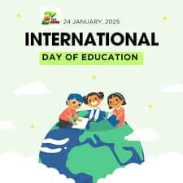

يوم العلم الدولي في يولا
الدعوة للعلم النوعي لالجميع
التركيز بلا حدث: الاحتفال بدور العلم في السلام والتنمية مع الترويج للعلم الشامل والعادل للجميع.
نظرة عامة على الحدث
يتم الاحتفال بيوم العلم الدولي في يولا بمختلف الأنشطة التي تبرز أهمية العلم وعرض الإنجازات العلمية في المجتمع.

أنشطة الحدث
- معارض علمية: عرض المدارس
- منتديات علمية: نقاشات الخبراء
- عروض الطلاب: عرض المشاريع
- إرشاد المسارات المهنية: نصائح المتخصصون
- عروض البرمجيات: الأدوات العلمية
المواضيع الرئيسية
- الوصول إلى العلم النوعي
- فرص التعلم الرقمي
- تطوير معلمي العلم
- ابتكار علمي
- علم شامل
المؤسسات المشاركة
- المدارس والجامعات المحلية
- المنظمات العلمية غير الحكومية
- الوكالات الحكومية للعلم
- مؤسسات تدريب معلمي العلم
- موفرو برمجيات العلم الرقمي
أثر الحدث
- زيادة الوعي بأهمية العلم
- تعزيز مشاركة المجتمع
- تحسين موارد العلم
- تقوية الربط بين المدرسة والمجتمع
- أفضل منتاجات علمية